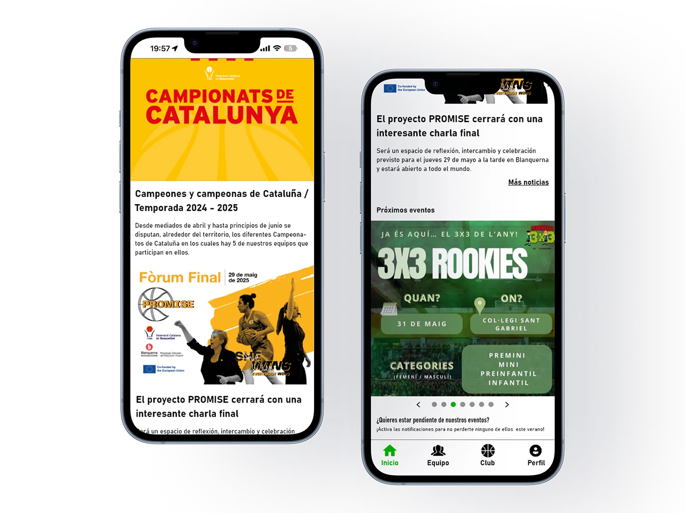
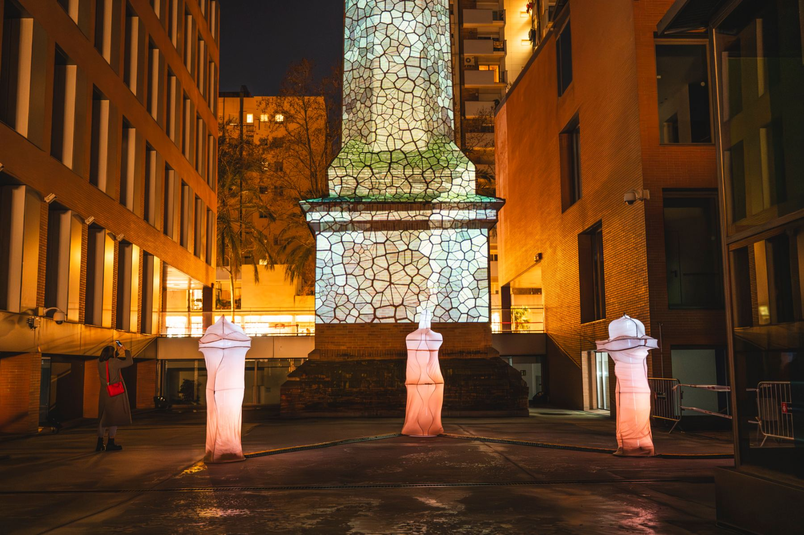
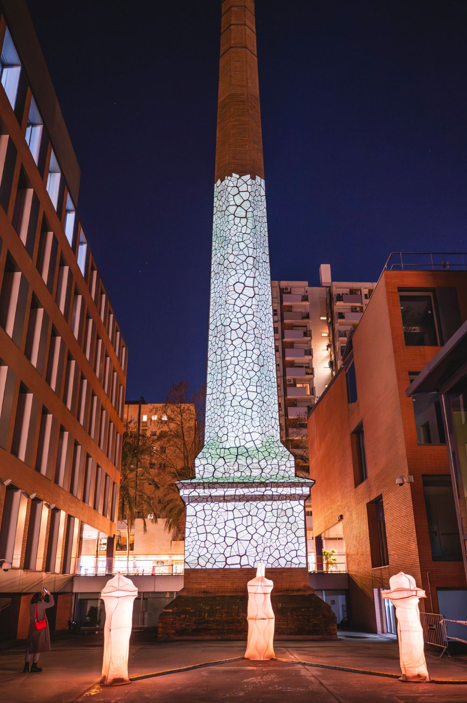

Diseño productos digitales que la gente entiende a la primera.
Soy Adrián Valenzuela, diseñador UX/UI. Investigo, diseño y prototipo experiencias claras.
Ver proyectosApp CB Viladecans
Una app para que entrenadores, jugadores y familias dejen de organizarse por WhatsApp.
Mi trabajo final del Grado en Diseño y Creación Digitales de la UOC.
Leer el caso completo- Rol
- Investigación, UX y UI
- Proceso
- Investigación, definición, diseño y prototipo
- Año
- 2025
- Prototipo
- Abrir en Adobe XD


Rebrot
Instalación de luz en Can Jaumandreu, en el Poblenou: de la fábrica textil al modernismo.
Realizada durante mis prácticas en la UOC y expuesta en Llum BCN 2026.
Ver la instalación- Rol
- Investigación, concepto y efectos lumínicos
- Equipo
- 7 estudiantes y 2 profesores de la UOC
- Evento
- Llum BCN 2026

Investigo antes de diseñar y cuido que cada decisión de interfaz tenga un porqué.
- Formación
- Grado en Diseño y Creación Digitales, UOC
- Disciplinas
- UX research, UI, prototipado y diseño de producto
- Herramientas
- Figma, Adobe XD, Illustrator